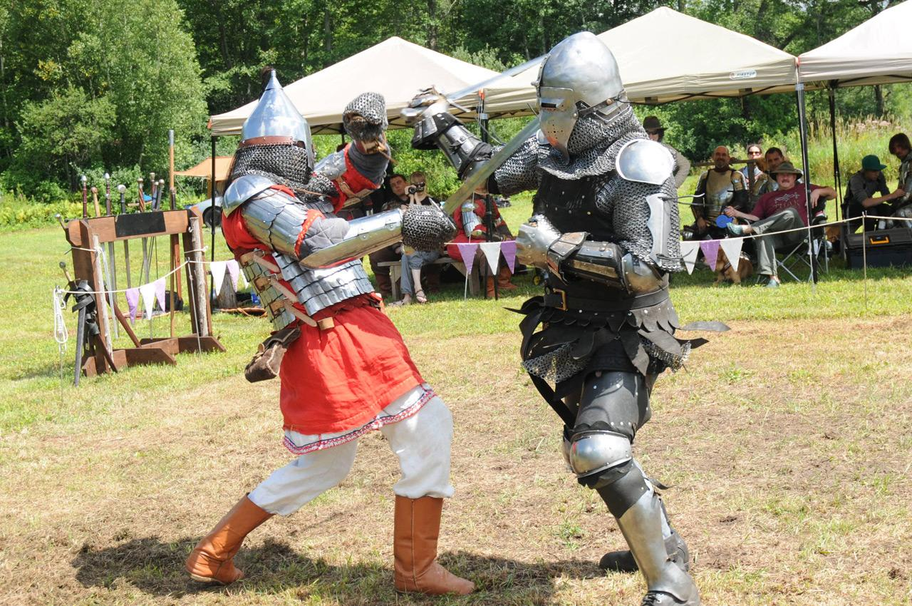

Introduction
This site will cover the basics of historical medieval combat. Contrary to popular media, there are many misconceptions about how people fought in historical times.

Very Common Misconceptions:
- Swords were not particularly heavy weapons; an average arming sword (one handed swords frequently depicted in popular media) only weighed about 1.1kg or 2.4lb.
- Swords do not cut particularly effectively if you are simply hacking straight down at your target, you have to implement some sawing motion. One analogy would be cutting a steak by pressing the knife straight down rather than sawing back and forth.
- Grabbing your own onehanded or twohanded sword according to the point above is safe, as long as you do not slide your hands along the blades. This technique is called halfswording.
- Leather and linen were surprisingly resilient forms of armour next to more the more well known plate and mail armour. These were woven into gambesons, cheap and effective protective jackets.